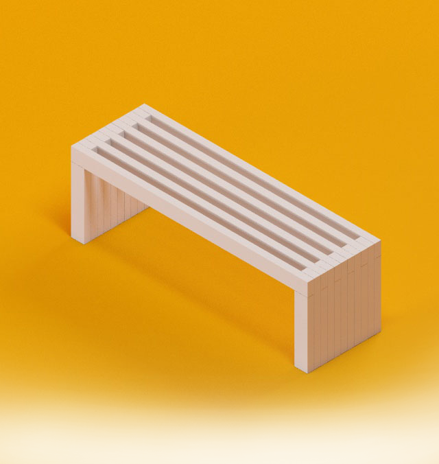
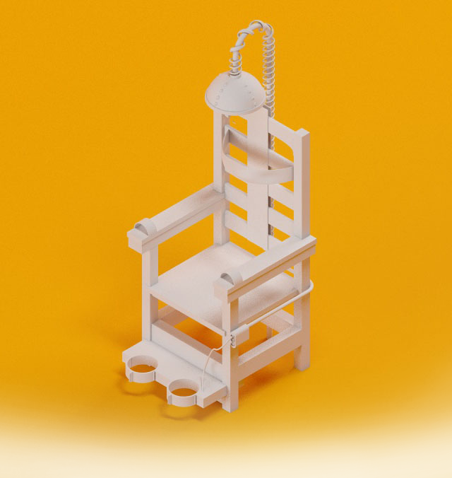

Research

- 
- 
The beginning of everything… Business domain, target audience, goals, tasks, context – blended and fused into meaningful requirements.
The beginning of everything… Business domain, target audience, goals, tasks, context – blended and fused into meaningful requirements.
High time to design and structure shared information environment. This leads to increased usability and findability and shape data hierarchy of digital products.
Affordances, cues, CTAs, visual elements – everything is put onto the interface blueprints in order to engage a user, motivate him to interact, and ensure positive emotional feedback afterwards.
Learnability, consistency, predictability – these are the things we take into account on this step.
Have a bright idea and want to check whether it would work with real people? Need to present something breathtaking to stakeholders? Want to make sure designers and developers are on the same page? Prototype!
All of the previous work now enwraps into fancy and pleasant visual identity. Why is this important? According to studies people tend to provide higher level of trust to attractive products.
Improving of UX implies iterations. That’s why after the each phase we check whether the proposed solution meets the users needs and iterate-iterate-iterate.
Whether you need additional info, free consultation or ready to bring your idea to life, we’ve got you covered.
Drop us a line!